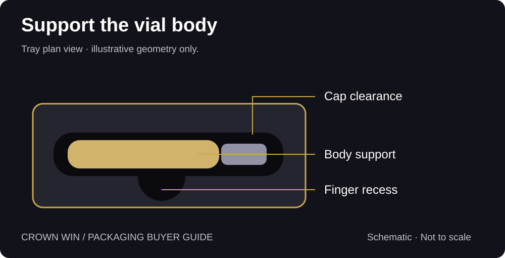
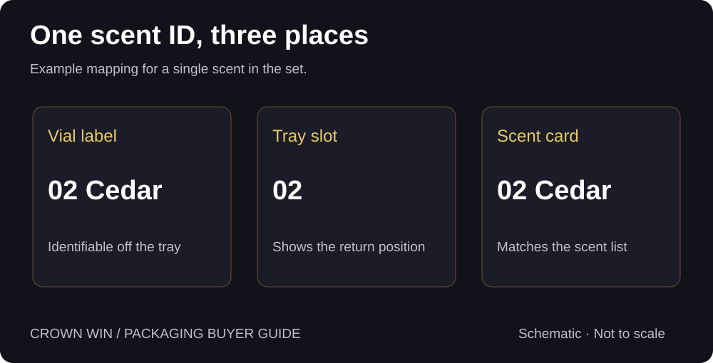
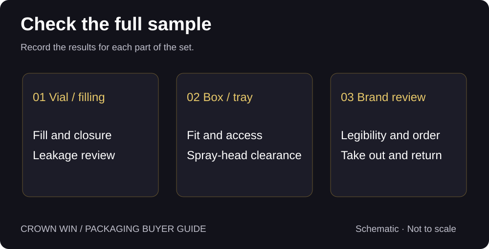

Perfume Discovery Set Packaging: Fit, Access & Labels
Help customers lift each vial, recognise the scent and return it to the right slot.
Quick answer: Design around the actual filled vials. Give each vial a supported resting position and a clear place to grip, repeat its scent ID on both the bottle and the tray, and test the full set through a take-out, try and return cycle. Check filling and closure separately with the vial supplier.
What do Reddit users notice after opening the box?
One r/fragrance post described a discovery set that looked intact but contained an apparently empty vial. The post does not establish where or why the liquid was lost. In another discussion, users described spills while opening small stopper vials. Those are two different issues: the first calls for a filling and closure review; the second calls for testing how people actually open the chosen vial.
A discussion about storing fragrance samples also includes people who move vials out of their original packaging after trying them. That is a useful reason to keep the scent identity on the vial itself. These threads are individual experiences; they do not establish how frequently a problem occurs.
How do you hold a vial without making it hard to lift?
Send physical vials with their production caps and labels. Record overall length, body diameter, cap diameter and any shoulder or base feature that affects fit. The stated liquid volume does not tell you the outside dimensions. If formats vary across the set, check each one or agree which dimensions represent the extremes.
Support the vial body, give the cap or actuator clearance and put the finger recess where a user can grip the body. When closing the lid or drawer, check that the structure does not press the spray head. Then check both ends of the fit: does the smallest vial move excessively, and can the largest vial be lifted without pulling on the cap or scraping the label?
Compare a folded paperboard cradle with a fitted tray if both suit the concept. Judge them on the same filled set: retention, access, assembly time and appearance after repeated removal. For a structural reference, see the Crown Win slide-out drawer box for perfume samples. Confirm the insert and clearances for your own vials.


How do shoppers identify a scent once it leaves the tray?
Use one ID in three places: the vial label, the tray slot and the scent card. For example, mark the vial “02 Cedar” and repeat “02” at its slot and “02 Cedar” on the card. Put the identifier where the vial can be turned and read in normal light. Colour can help scanning, but avoid relying on colour alone.
Hand a filled set to someone unfamiliar with it. Ask them to remove two vials, find the name of each scent, then return them without help. If a person has to infer the answer from tray order or tiny print, revise the label or the layout. At packing, reconcile vial labels, tray positions and card version against one approved scent list.


What should you approve before production?
Separate the checks by responsibility. The vial or filling supplier confirms fill, closure and any relevant leakage evaluation. The box supplier checks fit, retention, closure clearance and surface contact. The brand checks legibility, scent order and the opening experience. Review all three together on an assembled sample, but record the results separately.
Record the approved vial, insert drawing and artwork versions. Recheck fit and label placement if the bottle, cap, label stock or scent lineup changes. If the set will ship to customers, evaluate the complete shipping pack separately; an attractive presentation sample does not demonstrate transit performance.


What should go in your quote brief?
Send the number of vials per set, samples or dimensioned drawings, cap and label details, the scent list, preferred opening style, quantity and delivery destination. Ask the supplier to specify which components are quoted: presentation box, insert, scent card and any assembly. Identify who supplies the vials and who verifies filling and closure.
Frequently asked questions
Can I design the tray from the stated millilitres?
No. Measure the assembled vial with its cap and production label.
Does a tighter tray prevent leakage?
No. Tray fit controls movement and access. Filling and closure performance require separate checks.
Does every scent need its own tray?
Not necessarily. A common tray can work when compatible vial formats pass the same fit and access checks.
Research scope: Public Reddit discussions are linked above. They inform usability questions, not defect rates or technical conclusions.
Start with your actual vials.
Share vial dimensions, cap details, scent count and quantity so we can discuss a box, insert and sample brief.
→ Request a Custom Quote